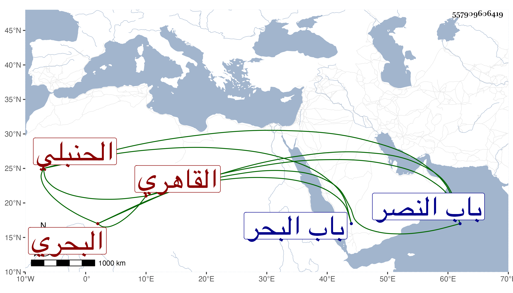

0902Sakhawi.DawLamic.ITO20230111-ara1.EIS1600.557909606419
Biography ID: 557909606419
536
محمد بن علي بن محمد بن أحمد بن موسى بن إبرهيم بن طرخان الكمال ابن النور بن الشمس بن الشهاب بن الضياء القاهري البحري نسبة لباب البحر الحنبلي ويعرف كسلفه بابن الضياء وأمه أطس سبطة النور الرشيدي وزوجة البوشي عالم الخانقاه ثم قاضيها تلميذة الونائي . ولد سنة أربع وثلاثين وثمانمائة بباب البحر ونشأ هناك فقرأ القرآن ومختصر الخرقي واشتغل يسيرا في النحو وغيره على الجمال عبد الله بن هشام وكذا حضر عند القاضي عز الدين الكناني في الفقه وغيره وفوض إليه عقود الأنكحة وفسوخها بل كان عزمه استنابته مطلقا فما اتفق فولاه بعده البدر واختص به لعلو همته وكثرة دربته وقال لي إنه كان يعرف طرفا من العربية مع براعة في الصناعة وانتفع به كأسلافه أهل خطته مع تكلم في معاملاته . مات بعد مرض طويل في ليلة السبت تاسع رمضان سنة ثمان وثمانين وحمل من باب البحر لمصلى باب النصر فصلي عليه بالرحبة في مشهد حافل ثم دفن بتربة سعيد السعداء سامحه الله وإيانا .
